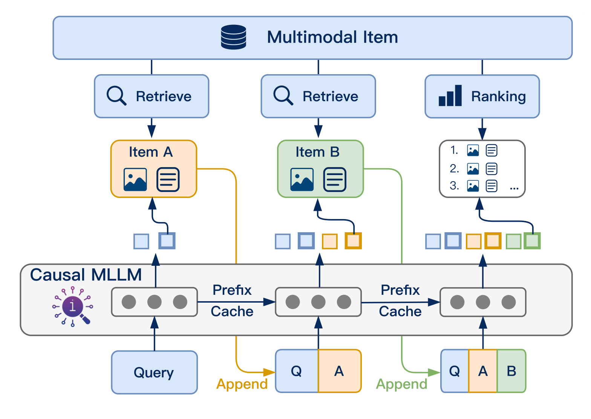
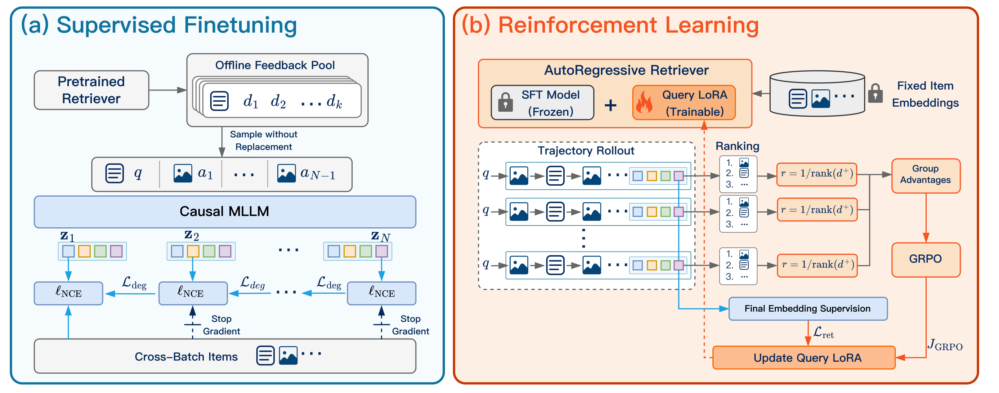
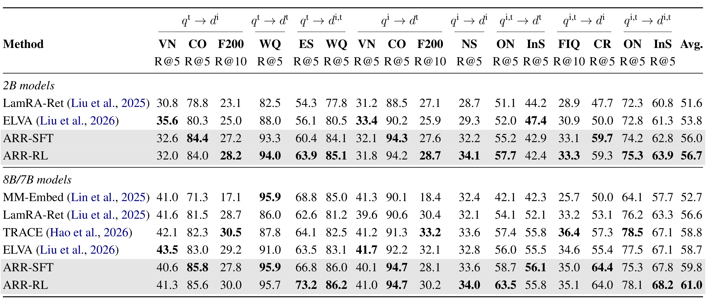
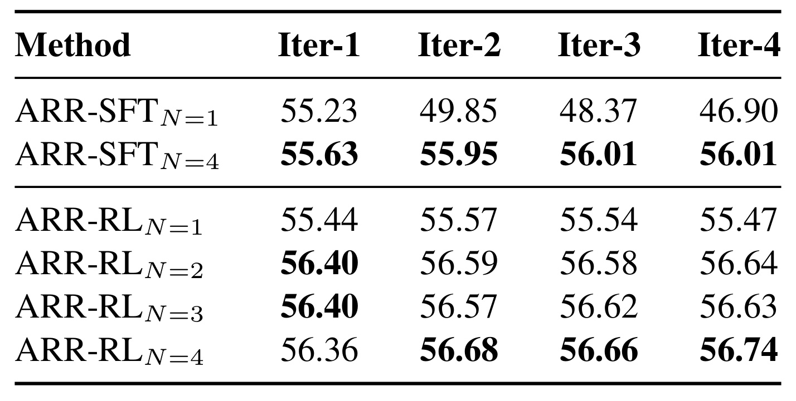
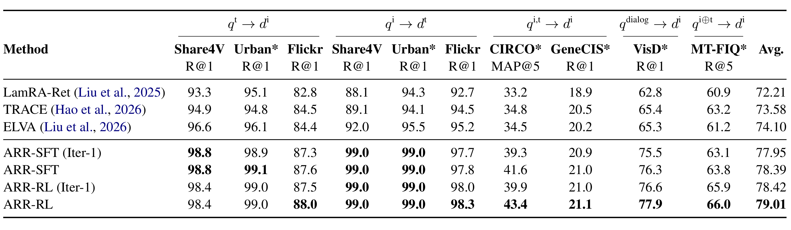
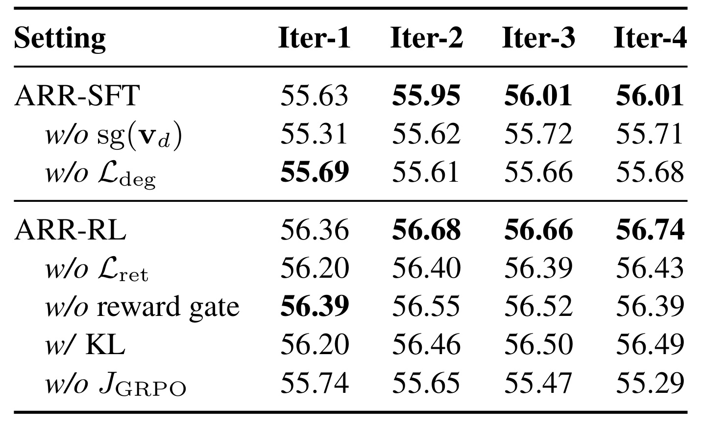
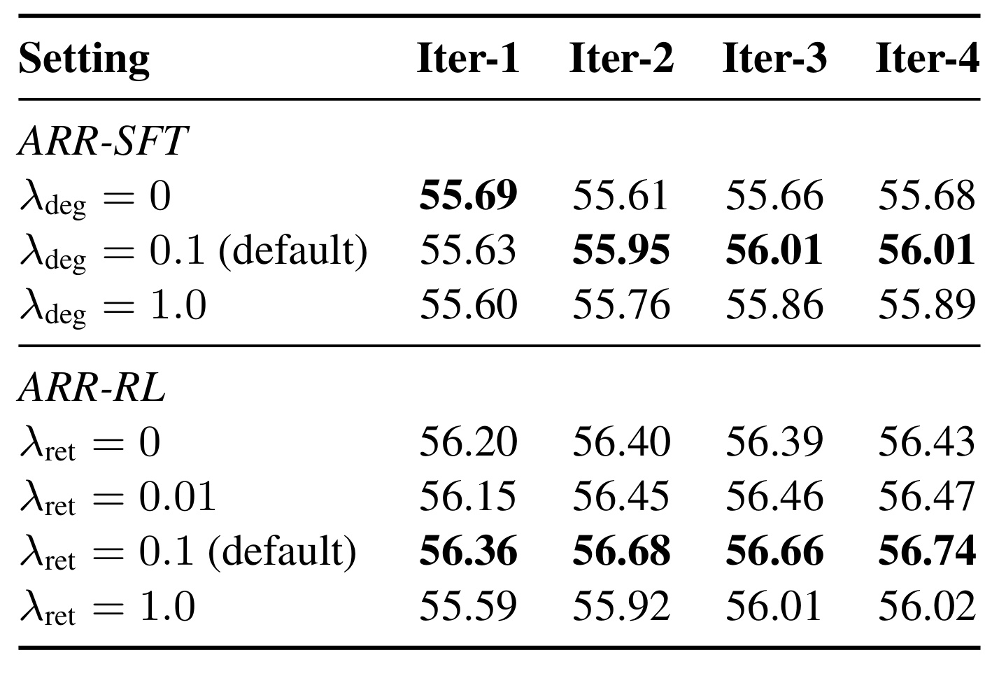

ARR：让检索器从候选内容中学习如何继续搜索
《Autoregressive Retriever: Improving Query Understanding from Item Feedback for Universal Multimodal Retrieval》研究统一多模态检索中的候选反馈：检索器不只把查询编码一次，而是读取自己选出的图文条目，更新查询表示，再进行检索。论文于 2026 年 10 月 8 日公开，一作 Jianfei Zhao 属于北京理工大学计算机学院及中关村学院，合作机构包括中关村实验室、小红书及北京理工大学东南信息技术研究院。其余作者为 Yifan Wang、Feng Zhang、Xin Sun、Chong Feng、Zhixing Tan、Yang Luo、Boyuan Pan、Xu Kai、Yao Hu。论文入口是本笔记唯一规范化论文链接；截至本轮核验，未确认独立代码或项目入口。以下数字来自作者原文，未进行独立复现。
传统检索把查询与条目独立编码，虽然便于复用索引，却使查询表示在看到可能澄清意图的候选后仍然不变。候选可能提供有用线索，也可能把查询带偏；检索器需要同时学会选择哪些条目作为反馈，以及怎样利用这些反馈继续搜索。
1. 背景和问题
统一多模态检索希望用同一个模型处理文本找图像、图像找文本、图文联合找图文等任务。这里的“统一”首先指输入组合与相关性关系的统一，并不意味着所有数据都被混进一个完全相同的候选库。用户可能输入一张衣服图片，加上一句“换成更正式的款式”；也可能用文字寻找包含特定实体的网页图文，或通过视觉问题寻找相应的知识条目。这些输入共享一个困难：查询通常没有把真正需要的信息表达完整，模型必须从文本、视觉和任务指令中判断哪些线索重要，以及它们之间是什么关系。论文把独立查询编码和候选集合之间无法互动的限制称为查询—条目间隙。这个名称并不表示向量维度不兼容，而是指查询在尚未观察检索对象时，就必须独自完成意图澄清。
独立编码的价值非常实际。候选向量可以提前算好，并在很多查询之间复用；服务端只需在线算一个查询向量，再用内积或余弦相似度搜索。当集合足够大时，这种分工使向量索引成为可行的基础设施。若每次查询都把所有候选与查询放入大型模型重新编码，计算量将随库规模直接增长，召回链路难以负担。ARR 因此保留条目的独立编码接口，把变化集中在查询侧。它读取的是少数被选出的条目内容，最终仍用一个查询向量去匹配独立索引。这一选择解释了为什么文章强调检索反馈，而不是直接把工作定义为通用多模态重排：被观察条目会改变后续搜索方向，影响还没有被模型逐一读取的条目的排序。
查询歧义也不是单纯“需要更多模型参数”。更强的多模态语言模型可能更好地理解图片和文本；生成推理或查询改写也能显式补出输入中的潜在语义。但是这些方法主要从原始查询内部挖信息，未必规定模型看见某个候选以后应怎样调整。伪相关反馈提供另一种信息来源：候选集合本身描述了当前可检索的概念、属性与表述方式。假设一个候选在整体目标上不匹配，却展示了某个用户真正想要的局部特征，它仍可能有助于下一轮搜索。这种反馈效用与“是不是最终答案”是两种关系。ARR 的研究问题是如何把中间候选的下游价值变成可学习信号。本文没有为每个候选标注专家级“好反馈”标签，而是利用最后的检索质量判断此前行动是否有帮助。
这也带来反馈污染。排名靠前的候选并不自动相关，视觉相近也不表示符合文本修饰，某些条目可能因为高频背景或常见描述成为容易匹配的错误结果。如果检索器每次都相信自己找出的第一项，第一次错误就可能进入后续上下文，被模型当成新的查询内容强化。一次性编码至少保持了输入边界；加入反馈后，模型需要额外学习如何维持原始目标，如何把线索和答案区分开。论文的监督阶段使用逐状态对比学习及退化惩罚，正是为了让读取候选成为受约束的查询解释行为。策略阶段再优化候选选择，避免只会被动读取离线随机反馈，却无法在实际检索中选择有帮助的条目。
需要特别区别两种“自回归”。语言模型通常以词元为动作，生成下一个文本片段；ARR 的动作是候选条目的身份，下一次状态包含之前选出条目的真实图文内容。它没有在方法定义中要求输出一段自然语言思维链，也不通过生成条目编码完成最终召回。因此，读到自回归检索不能直接推断它属于生成式推荐中的语义标识生成路线。这里的序列是候选观察序列，生成的是连续查询表示；最终检索结果仍由向量相似度确定。与常规重排相比，它又有另一层区别：重排通常在固定初召回列表内部调整分数，而本文每轮更新查询后能够改变下一次检索，最后在指定集合上排序。
本文的“反馈”也不是用户点击、点赞或主动纠正。训练时通过标注正例构造监督和奖励，但输入给模型的被检索条目不附带相关性标签。推理时条目来自当前查询表示的检索，属于模型从集合中获得的观察。将它迁移到推荐业务时，如果把真实用户行为加入同一上下文，需要重新定义观察和行动，论文结果不能自动覆盖那种交互协议。尤其是最终指标是检索召回或平均精度，并没有在线点击率、转化率或长周期用户满意度。这些指标差异决定了研究结论首先适用于检索器的表征与离线排序能力。
理解论文还需要预先知道三个集合不同。监督阶段的离线反馈池用于抽取中间候选，对比监督集合提供正负样本；强化学习阶段的查询专属候选池同时承担行动、奖励和辅助监督计算。最终评测的任务库又有自己的规模。把这些对象全称为“候选集”，很容易误以为奖励是在百万级全库上计算，或者监督阶段故意保证模型会读到正确答案。实际做法恰好不同：监督池不额外补入缺失正例，强化学习池才把正例与前一阶段模型的前百条候选合并。后面的方法与实验应分别沿着这三种角色阅读。
最后，评估 ARR 时应该把训练改进和在线多步改进分开。若训练模型后，只做第一步检索就已经更强，价值可能来自训练目标与表示学习，而不需要承担全部反馈推理开销。若在线多步仅增加少量效果，就不能用模型对基线的总提升来替多步服务成本辩护。论文恰好提供了跨训练步数、推理步数的交叉实验，使这两条收益能够拆开观察。阅读本文最有用的问题不是“多轮是否比单轮强”，而是训练中学到的候选效用，究竟改善了初始表示多少；真实推理再读候选能够额外改善多少；错误候选是否仍会让某些任务下降。
2. 方法
2.1 用候选条目序列更新查询表示
基础编码器把任意图文输入映射到同一向量空间。原文式（1）先给出独立查询和条目表示，向量经过二范数归一化：
符号解释：$q$ 是查询，$d$ 是候选条目，$f_\theta$ 是参数为 $\theta$ 的编码器，$z_q$ 和 $v_d$ 是归一化的查询与条目向量，$s_\theta$ 是相似度。归一化以后内积等于余弦相似度。这一接口保留了常规向量检索的条目侧预计算能力，ARR 对它的主要改动是让查询不再只有单个输入状态。
原文采用 $N$ 个查询状态与 $N-1$ 次反馈选择。第一个状态只含原始查询；选择一项反馈后，把它的内容和可用元数据放入多轮对话模板，再用因果多模态模型读取。每轮助手位置的占位表示词元用于提取向量。状态及选择策略对应式（3）到式（5）：
符号解释：$t$ 是状态编号，$a_t$ 是第 $t$ 次选择的反馈条目，$T$ 是多轮输入序列化模板，$C(q)$ 是该查询的反馈候选池，$H_t$ 是已经选择过的条目集合，$\tau$ 为策略温度，$\xi$ 是有序反馈轨迹。公式中的概率只对未观察候选有效，其余候选概率设为零。当前状态依赖之前选择，所以每个行动会通过新内容间接改变后续行动分布，而不是独立地从一个固定排名表取若干条目。

Figure 1 中最值得沿着读的不是颜色，而是三个不同的时间点：原始查询先进入因果多模态模型得到表示，用这个表示检索条目 A；A 的内容被追加后产生新表示，再寻找条目 B；读过 B 后的最终表示用于排名。图中的检索框与最终排名框共享独立条目接口，但查询内容在不断增加。历史掩码只禁止中间行动重复选择同一条目，不会禁止已观察条目出现在最终检索结果中；否则正例一旦被读取就会被错误排除。图把前缀缓存画在查询更新之间，说明因果模型可以复用已处理前缀，减少重复处理原始查询与先前反馈的计算。缓存并不消除新条目的文本和视觉编码，也不消除每轮向量搜索、候选取回、上下文扩展或最终排序。本文没有提供端到端推理延迟表，因此图中的缓存只能作为实现优化方向，不能被解释为多轮免费。其原始示意只展示两次反馈，默认实验实际采用四个查询状态和三次反馈选择。看到三个检索或排名框也不能机械推断它对应实验里的三状态设置；要依靠式（3）的状态定义与实验配置。该图还强调被追加的是条目内容而不是相关性标签，检索器必须自己判断内容如何支持原始查询。这一限制使“找到看起来相近的候选”与“读后能改进检索”成为不同能力，也解释了为何后续训练要同时考虑读取与选择。
最后的输出为 $\operatorname{TopK}_{d\in D}z_N^\top v_d$，其中 $D$ 是待排名集合，$z_N$ 已经包含完整反馈历史。推理时作者按相似度贪心选择尚未读取的候选，不使用训练时的策略抽样。序列长度有限，默认最多读三项反馈；本文没有学习一个主动决定何时停止的动作。因此，部署时若希望不同查询使用不同轮数，需要补充停止机制或策略，而不能把固定四状态模型当成已经解决了自适应预算分配。
2.2 监督微调先教会模型理解反馈
监督阶段使用初始预训练模型构建每个查询的离线前十候选池，然后从中无放回随机抽取三项，组成四状态轨迹。这个池不按标注相关性过滤，也不会为了确保读取正例而补入缺失正例。它与带正例的对比监督集合分离：模型可能连续读到不相关内容，却仍须在每个状态把正确条目排到更靠前的位置。式（2）、式（6）和式（7）可连起来表示为：
符号解释：$\theta_0$ 是离线建池时的初始参数，$K$ 是池大小，默认十；$B_q$ 是包含标注正例 $d^+$ 与负例的对比集合，$\ell_t$ 是第 $t$ 状态的 InfoNCE 损失，$\operatorname{sg}$ 表示停止梯度。式中 $\tau$ 对应对比温度，附录默认值为零点零二。第一状态更新查询和独立条目两端，反馈状态只向查询分支传递这部分损失的梯度。这里停止的是独立条目向量的梯度，不等于后续状态不训练模型，也不等于忽略被追加的反馈内容。

Figure 2 左半部分把离线反馈池、无放回抽样、多个查询状态及跨批条目对比集合连接起来。横向每个状态都有监督，后面状态向独立条目侧的连线标为停止梯度。这使读者能把“学会利用反馈”与“把候选向量挪到容易拟合的位置”区分开：后者可能降低当前训练损失，却未必使查询解释能力更好。右半部分进一步把监督阶段模型冻结，只有查询侧低秩适配器继续学习。它从固定条目向量中抽取不同轨迹，利用最终排名产生组内相对优势，再用策略目标更新适配器；同时给最终表示加对比监督。两半图因此不是同一个训练目标换了数据，而是从随机离线轨迹的逐步监督，转换成当前策略轨迹的终端归因。它还揭示一个重要的梯度缺口：最终排名是奖励的来源，但排序与倒数名次被视为脱离梯度的标量，策略损失主要作用于此前选择行动的概率。若缺乏直接监督，最终查询表示只能通过共享参数间接改变，所以右侧专门画了最终表示监督分支。可以把图中的箭头分成“内容进入状态”和“损失更新参数”两层阅读，两者不会一一对应。候选内容参与查询编码，并不意味着其作为独立索引条目的向量也会随策略训练更新；反过来，固定索引也不意味着查询侧不能读取候选内容。图中同一条目会以这两种身份出现，它们在参数开关和优化角色上不同。 逐步 InfoNCE 并不保证每次加入反馈都降低损失。因此式（8）对相邻状态损失的相对恶化加罚，式（9）将它与平均对比损失相加：
符号解释：$\delta$ 为数值稳定项，$[x]_+=\max(x,0)$，$p_{\mathrm{off}}$ 是离线轨迹分布，$\lambda_{\mathrm{deg}}$ 是退化惩罚权重，默认零点一。前一状态损失停止梯度，避免模型通过人为抬高参考损失来减少罚项；正部算子逐步施加，避免某一步大幅改进掩盖另一步恶化。它鼓励后续状态更好，却不提供逐查询排名单调上升的数学保证。原文附录采用两轮训练，第一轮先关闭惩罚以习得基本反馈读取，第二轮启用。图像编码器一直冻结，监督阶段更新其余主干；第一步对条目分支的监督和后续步对查询分支的监督，帮助在独立索引与上下文感知查询之间维持兼容性。
2.3 用终端排名训练反馈选择策略
监督阶段会读离线抽样反馈，但它没有直接优化“选哪一项最有利”。强化学习阶段冻结监督训练后的主干和条目索引，在查询编码时打开额外 LoRA，索引条目编码时关闭它。式（10）把查询写为 $z_t^\phi=f_{\theta,\phi}(T(h_t))$、条目写为 $v_d=f_\theta(d)$，其中 $\phi$ 是可训练的查询适配参数。训练池由监督模型的前百候选与正例取并集并去重构成；抽样、奖励、最终对比监督均在该池计算。这样训练不需每次更新都重建索引，不过它也把探索限制在当前池内。正例补入使奖励可计算，不能据此声称系统在全库必然找得到正例。 奖励采用最终正例的倒数名次；同一查询抽八条轨迹，比较各轨迹结果形成优势。式（11）至式（13）为：
符号解释：$m$ 编号同一查询的轨迹，$\phi_{\mathrm{old}}$ 是采样策略参数，$\{v_d\}_q$ 为训练池的固定向量，名次从一开始，$\bar r$、$\sigma_r$ 为组内奖励均值和标准差，$A_m$ 是整条轨迹的相对优势，$\rho_{m,t}$ 是新旧策略在观察到的状态与行动上的概率比。奖励在整个训练池排名，包含此前读取过的项。不同查询的奖励尺度可能不同，组内比较使学习信号主要来自同查询的候选序列差异。对于奖励完全相同的组，如何处理零方差需要在实现中核查，论文此处公式没有展开数值防护细节。
符号解释：$M$ 为每查询轨迹数，默认八；$\epsilon$ 为策略概率比裁剪幅度，默认零点二；$N-1$ 为行动数。同一轨迹所有行动收到同一个终端优势，没有单独测量每一步的边际贡献，所以它提供的是整条路径归因，而不是逐候选的严格因果效用标签。目标最大化有利轨迹的行动概率，但裁剪限制单次更新幅度。论文不使用单独参考模型的 KL 惩罚，选择用检索任务的直接监督维持最终表示质量。 由于终端排名奖励脱离梯度，式（14）额外给较差轨迹的最后状态施加 InfoNCE：
符号解释：$R$ 是奖励阈值，默认零点二，$\mathbb I$ 为指示函数，$C_{\mathrm{RL}}(q)$ 是强化学习池。门控依据 rollout 奖励，在策略更新期间保持固定；奖励低于阈值的轨迹才获得辅助监督。这个设计不是给所有低分条目单独加罚，而是把最终表示监督集中于低奖励轨迹。倒数名次阈值也意味着名次较靠后的轨迹更容易进入监督，但多正例情况下原文另行采用各正例奖励最大池化，监督损失则平均多个正例，不能只按单正例名次解释全部训练样本。 原文式（15）写成如下形式：
符号解释：$\lambda_{\mathrm{ret}}$ 是辅助对比权重，默认零点一。这里保留原文记号，但式（14）已含逐轨迹门控，式（15）又在系数中出现门控，且 $r$ 没有带轨迹下标，表达上存在重复或歧义。邻近正文和附录明确说明“逐轨迹先门控再平均”，所以本笔记按该文字解释训练意图；不据此断言作者代码具体将指示函数乘一次还是重复乘。对同一二值变量，重复相乘数值不变，但对组平均后的外部门控则可能改变行为，复现时需要核查。这一点尤其提醒我们，不能为了讲解顺畅，把原文含糊记号自行整理成已验证实现。
3. 实验结果
3.1 域内成绩在任务专属候选池上获得
M-BEIR 由十个数据集形成十六个任务组合，涵盖八类查询到条目模态映射。附录明确采用 local-pool 协议：每个查询在对应任务的候选集合内排名，不是把所有任务候选混成一个统一大库。候选规模差异很大，文本找图像的 COCO 候选为五千，EDIS 图文候选约一百万；WebQA 文本候选约五十四万四千，CIRR 候选约两万一千。Fashion200K 和 FashionIQ 报告召回前十，其余任务报告召回前五。表内平均值把这些任务指标汇总为百分数，能够用于同表方法比较，但不是某个同质流量总体的单一召回指标，更不能解释成线上业务提升。

Table 1 的最直接结果是 ARR-RL 在两个规模上平均表现最高：二十亿参数模型为百分之五十六点七，八十亿参数模型为百分之六十一点零。八十亿模型超过同表最强平均基线 TRACE 的五十八点八，差为二点二个百分点；相对增幅若另行计算约为百分之三点七四，二者不可混用。强化学习相对同规模 ARR-SFT 的增量分别为零点七和一点二个百分点。这个结果说明整套训练与反馈流程在作者协议下有整体优势，但不能全部归因为推理多轮，因为表里 ARR 行统一使用第四状态，没有同时列出第一状态对基线。单任务增益也不均匀：八十亿模型的 EDIS 文本到图文召回从六十六点八到七十三点二，上升六点四个百分点；OVEN 图文到文本从五十八点七到六十三点五，上升四点八个百分点，符合跨信息结构任务有可能从反馈获益的解释。然而八十亿 CIRR 从六十四点四降到六十四点零，InfoSeek 图文到文本从五十六点一降到五十五点八；二十亿 VisualNews 两个方向也略降。这些回退使“所有任务都改善”不成立。作者提出小规模强化学习样本分布和质量差异可能引入任务偏差，这属于解释假说，表格没有直接证明因果。读表时还应留意基线组写作八十亿或七十亿模型，而不是所有模型主干、训练数据、预算严格完全一致的控制试验，因此这里报告的是比较结果，不是单一组件在完全等预算下的净因果贡献。
这些结果是作者报告的离线评测，笔记未复现训练或重跑索引。特别是强化学习训练池仅为前百候选并入正例，而主结果测试任务池可能远大于一百；二者不能混成同一个实验集合。虽然固定条目索引使方法接口适合较大集合，表一仍不能说明它在多个异构域混合搜索、真实索引近似误差或动态新增条目情形下的效果。对于推荐召回实践，更有信息量的读法是寻找与自己输入结构类似的列，再看收益与回退的范围；直接用全部十六项平均值预测业务指标，缺少任务、流量与候选构成映射。
3.2 先分离训练收益，再讨论推理增加轮数
表二针对二十亿模型，把训练状态数和推理状态数交叉报告。所有强化学习变体都从四状态监督模型开始。名称带一状态的强化学习阶段对照，仅在该阶段数据上额外做对比训练，既不读取反馈也不使用 GRPO，因此不能把它视为完整一行动强化学习。这个对照设计帮助判断额外数据与对比优化是否足以解释后训练增益。

Table 2 给出的反例很强：只在一个状态训练的 ARR-SFT，第一状态得五十五点二三，推理强行扩到四状态后降到四十六点九零，下降八点三三个百分点；第二状态已经降到四十九点八五。这支持“读取候选的能力必须训练”，但不能证明反馈本身在任何模型上都会有害。四状态监督训练后，初始表示为五十五点六三，最终五十六点零一，增量零点三八个百分点；第一状态相对单状态监督训练已经高零点四零，表明训练时的多上下文监督会影响只读原始查询的表示。完整四状态强化学习模型第一状态五十六点三六，第四状态五十六点七四，在线增加三次反馈也只有零点三八个百分点；它相对监督初始化在第一步和第四步分别提高零点七三个百分点。于是，用五十六点七四减去早期单状态训练的五十五点二三，不能把全部一点五一个百分点称为多轮推理提升。两状态强化学习模型在第一状态就达到五十六点四零，第四状态五十六点六四；相比四状态训练最终差仅零点一零。完整四状态模型第二状态五十六点六八，第三状态略回落到五十六点六六，也再次说明退化惩罚与策略训练没有保证每一步严格单调。若工程成本限制只能保留一次反馈，作者结果提示可探索两状态方案，但还需要实际延迟与不同任务收益测量，不能只用这一平均数宣布最优预算。
初始表示提升尤其值得研究。训练中的候选路径给查询适配参数施加更丰富信号，而共享参数使这种影响也出现在未读取反馈的首状态。但原文把更软的候选效用归因作为可能机制，不能由表二直接识别哪些语义特征发生改变。表中无 GRPO 的额外对比对照首状态为五十五点四四，明显低于有候选策略训练的两状态首步五十六点四零，说明额外对比训练不足以解释全部收益；它仍不能排除策略训练伴随的数据采样、目标权重或优化路径共同作用。针对应用，优先复现一个训练后只用首状态的对照，会比先搭建多轮线上服务更容易定位价值来源。
3.3 零样本迁移有改善，但并非全部图像未见过
表三涉及七个基准，包括长图文双向检索、组合图像检索、条件相似检索、视觉对话和多轮服装检索。其中 ShareGPT4V、Urban-1K、Flickr30K 各有两个方向，因此表内任务列多于七。候选池跨度也很大：长图文任务通常是一千，CIRCO 约十二万，GeneCIS 每个查询仅十到十五项；视觉对话为两千，多轮 FashionIQ 约六千二百。多数列使用首项召回，CIRCO 使用前五平均精度，多轮服装使用前五召回。跨这些指标计算的平均值仍只是论文约定的汇总，不能用来表示某个统一难度的检索概率。

Table 3 中 ARR-RL 的最终平均为七十九点零一，超过最强平均基线 ELVA 的七十四点一零，差四点九一个百分点。更关键的是表同时给出了第一状态：监督模型从七十七点九五到七十八点三九，推理反馈增益零点四四个百分点；强化学习模型从七十八点四二到七十九点零一，反馈增益零点五九个百分点。强化学习相对监督模型的初始表示增量为零点四七，最终增量为零点六二。CIRCO 的反馈改善最明显，强化学习首状态三十九点九、最终四十三点四，增加三点五；视觉对话七十六点六到七十七点九，增加一点三。多轮 FashionIQ 首状态六十五点九、最终六十六点零，只提高零点一；长图文的一些首项召回已接近九十九，反馈收益自然有限。另一方面，ARR-RL 在 ShareGPT4V 文本到图像上为九十八点四，低于监督模型的九十八点八，依然存在局部回退。星号不是统计显著性标志，它说明相应基准复用了 COCO 或 FashionIQ 图像。附录明确写出这些任务没有专门微调，却不意味着所有视觉内容都在训练中从未出现。因此本笔记保留“无任务专属微调的零样本评测”表述，不升级为“完全未见数据泛化”。这个区别会影响对检索迁移能力的判断，尤其当服装或图像属性在训练任务和评测任务之间共享时。
结果支持反馈能力能迁移到对话或组合输入，却没有直接覆盖完整的人机互动过程。视觉对话和多轮 FashionIQ 的历史输入来自数据集，ARR 自己读取的中间候选与用户新反馈是不同来源。若用它设计交互推荐，需要重新处理用户确认、否定与模型观察的优先级。表三只能说明作者模型能在给定静态输入条件下更好地取回目标，不能证明自主反馈已经等同于用户意图校准，更不能从“多轮数据集上有提升”推导长期互动体验的提升。
3.4 消融支持双目标互补，辅助权重仍有取舍

Table 4 分别测试监督侧与策略侧的关键选择。监督侧开放反馈状态对独立条目向量的梯度，最终均值从五十六点零一降到五十五点七一；去掉退化惩罚则首状态几乎不降，却使最终结果只有五十五点六八，低于自身首状态五十五点六九。这支持退化惩罚主要服务于反馈后的状态质量，停止条目梯度也有助于当前训练设置的稳定性。策略侧取消最后状态对比损失，最终从五十六点七四降到五十六点四三，但仍超过监督模型；取消 GRPO 只保留最终对比监督则最终五十五点二九，反而低于监督初始化。于是两种监督有不同作用：策略目标改善读取路径，最终对比目标补足排名奖励没有直接梯度的表示端。若把辅助监督施加给所有轨迹，最终五十六点三九，低于奖励门控版本；加参考策略 KL 的版本为五十六点四九，也低于默认。这里能够得出的结论是默认组合在所测二十亿、任务平均与固定超参数设置下最好，而不是 KL 在检索强化学习中普遍无效。消融的差值通常不到半个百分点，论文表格没有给出重复运行方差或显著性检验，因此适合用来支持机制设计方向，不适合把每个小差异解释成稳定的普遍定律。还可以利用首状态与末状态区别判断目标影响的位置：去掉奖励门控后首状态五十六点三九，比完整模型五十六点三六略高，末状态却低零点三五个百分点，说明这一变体的主要问题出现在反馈路径之后。加入参考策略约束后首状态和末状态都下降，属于另一种变化模式。所有这些消融只在二十亿模型上报告，且没有对应八十亿重复对照；不能把单一规模、固定候选池和默认权重下的排序直接当作大模型或更大池的最优目标组合。

Table 9 进一步把“有无组件”变为权重问题。退化权重为零时最终五十五点六八，为零点一时五十六点零一，为一点零时五十五点八九；较强惩罚虽仍帮助后续状态，却没有最高的绝对效果。最终对比权重为零、零点零一、零点一和一点零时，最终分别为五十六点四三、五十六点四七、五十六点七四、五十六点零二。辅助监督不是越强越好，一点零几乎吃掉强化学习相对监督模型的收益。对这组结果的合理解释是，过强的逐状态稳定或终端对比约束会改变策略学习与表示学习的平衡，但表格没有直接测量梯度冲突，不能声称已验证某个冲突机制。这张附录表也限制了移植时直接照搬权重的合理性：候选池大小、温度、组内奖励分布或查询难度变化以后，同样的数值不一定对应同样的有效梯度尺度。默认零点一是作者比较过的配置选择，而不是一个可不经验证普遍复用的常数。若首状态很强但反馈后下降，应分别检查退化惩罚、终端监督和策略分布，不应仅靠增大一个权重解决。
训练成本来自附录 A：二十亿监督训练用八张 H20 约二十四小时，八十亿用十六张 H20 约四十八小时；强化学习均用八张 H20，分别约八和二十四小时。换算作者报告的设备时长，二十亿两阶段合计约二百五十六 H20 GPU 小时，八十亿约九百六十 H20 GPU 小时。这是描述资源量的粗计，不含未披露的数据准备、索引构建或失败尝试。监督有效批次为一千零二十四查询正例对，强化学习 rollout 批次为一千零二十四查询、优化批次为二百五十六轨迹，两者计数单位不同；强化学习 LoRA 秩一百二十八、缩放二百五十六、策略温度零点一、最终对比温度零点零五。本文没有实际查询吞吐、首包时延、尾延迟、向量服务时间或缓存命中曲线，推理效率数据未验证。训练成本和两状态的效果取舍可以帮助规划复现，却不能替代真实服务的效率评测。
4. 总结
ARR 最有价值的贡献是把候选反馈效用放入检索器自身的学习闭环。模型共享多模态表征接口，但查询能够依赖已经观察到的条目内容；监督阶段保证不同状态仍朝向正例，策略阶段把候选选择同最终排名联系起来，固定条目索引则保留了常规向量召回的系统分工。它的行动对象是条目，不是语言词元，研究重点也不是生成更长的推理文本。因此，对于正在探索多模态搜索、复杂查询或召回反馈的团队，这篇论文提供了一个与查询改写、外部重排并列的设计选项：直接学习候选条件化的查询表示与反馈选择。
实验最可靠的结论不是“多轮带来巨大提升”，而是训练和推理两个阶段都有作用，且量级不同。域内八十亿平均六十一点零、相对 TRACE 提高二点二个百分点，证明整套作者模型在其比较范围内表现好；表二里二十亿强化学习模型从首状态五十六点三六到最终五十六点七四，却提示额外三次反馈仅增加零点三八个百分点。零样本结果同样存在首状态改善和反馈增益，七个基准平均最终七十九点零一，但图像重用与候选规模差异使其泛化含义需要收窄。把这些层次同时保留，才不会拿训练后的总体领先为未测量的在线多轮成本作过度辩护。
对推荐召回可以形成三个具体研究启发。第一，中间候选不必是正确答案，它也可能携带属性、实体或意图线索；训练目标可以给这种下游帮助分配信用，而不只标注正负例。第二，固定条目侧空间、仅更新查询侧适配器，可能使策略训练更容易接入已有索引生命周期，但索引漂移、条目更新与跨模型版本兼容仍需额外测试。第三，训练中利用候选，未必要求线上每次都利用候选；可以先比较只取首状态与增加一次反馈的收益，再决定是否建立更长的查询执行链。上述是从论文机制出发的工程假设，尚没有本文的在线业务证据支持。
局限至少有三方面。其一，策略训练池只有前百候选并入正例，能探索的路径被初始检索结果限制，真正全库的动作探索与近似索引误差并未单独检验。其二，反馈会污染查询，退化约束没有逐步单调保证，局部任务确实回退；缺少错误反馈类别、不同模态扰动和查询歧义程度的详细分组分析。其三，多轮需要更多内容读取、状态编码和向量查询，论文没有端到端延迟或吞吐实测，不能仅因前缀缓存和固定索引就判定适合高并发服务。此外，终端奖励到每一步行动使用同一轨迹优势，细粒度因果归因仍较粗；式（15）的门控记号也需要代码核验，当前未确认独立开源实现。
后续复现最值得先做训练收益拆分：同一主干、相同额外数据与预算下，对比普通单状态对比训练、四状态监督训练及有无 GRPO 的查询适配训练，再分别测首状态、一次反馈和三次反馈。候选池应从论文训练池扩展到真实任务库，并把取回图文内容、视觉处理、缓存复用、索引调用计入同一延迟测量。也应保留已有的任务回退，按查询歧义、模态组合和反馈错误率分组，确定哪些请求适合反馈，哪些最好在首状态停止。如果这些测试仍能保住首步与反馈收益，ARR 才有更充分的依据进入实际召回系统的下一阶段。本文当前支持一个值得验证的方向，尚不支持替代线上验收。